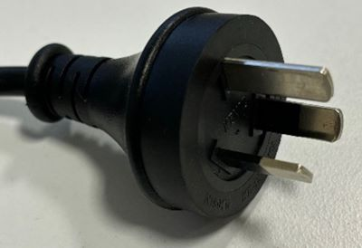
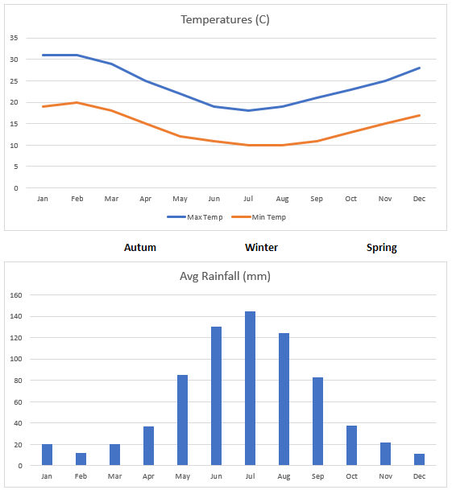

Travel information

Welcome to Perth.
Perth has been consistently rated as one of the top ten most liveable cities in the world for over 15 years. It has a relaxed lifestyle and is located in the same time-zone as much of Asia. Perth has a Mediterranean climate with hot, dry summers and mild, wet winters. It is the sunniest capital city in Australia with clear blue skies approximately 70% of the year (noting, unfortunately, that SEC is scheduled during the Australian winter!).
Perth has much to offer in terms of attractions beyond the event with opportunities to explore the Perth CBD, travel within WA (including to see the Quokka’s at Rottnest Island) or across Australia. There is also the opportunity to use Perth as a springboard to explore Asia (with Singapore a short direct flight away).
Getting to Perth
Perth has an international airport and has direct flights to many countries, or, via hubs (e.g. Singapore, Doha, Kuala Lumpur, Dubai). Perth is also well connected for domestic travel with daily flights to all capital cities.
Perth Airport (PER) has train access to the city (18mins) with other airport transfer options available (taxi/Uber/DiDi) - further details.
Visa
Please note, we cannot provide any visa advice - this can only be provided by an authorised visa agent. Always refer to the Australian Government Department of Home Affairs website and be cautious paying for a visa through a third party provider.
All visitors (without an AU/NZ passport) will require a visa to attend the event. We can provide an invitation letter if required after registering for the conference (likely only needed for the full Business Visitor visa). The information below is indicative and delegates should make their own enquiries via the Australian Government Department of Home Affairs website or through their travel agent.
Delegates attending from specific (UK/EU) countries can obtain a free eVisitor visa (sub-class 651). Please refer to the eligibility list to check if your passport is issued by one of the eligible countries. This visa is typically issued within one day.
Delegates from Canada/US and some Asian countries are likely to need an Electronic Travel Authority visa (sub-class 601) ($20AUD). Please refer to the eligibility list to check if your passport is issued by one of the eligible countries. This visa is typically issued within one day and is managed using the ETA app.
Delegates not covered under the above visa schemes (check the list of countries for each visa first) will need a full Business Visitor visa (sub-class 600) – this visa type has a longer processing time (50% processed within 7 days/90% within 18 days - as at January 2026) is more expensive ($200AUD); and, may require additional documentation.
- When submitting a sub-class 600 visa request, you will need to provide details of the organisation you are visiting:
- Organisation
- Edith Cowan University, 270 Joondalup Drive, Joondalup, Western Australia, 6027
- Contact Person
- Paul Haskell-Dowland, 08 6304 5039, p.haskelldowland@ecu.edu.au
Insurance
All delegates will need appropriate/adequate travel insurance – see the Australian Government Immigration website for further information.
Accommodation
Perth has extensive options for accommodation at levels to suit all budgets. Details on our venue page.
Electricity
Australia has 220-240v 50Hz AC power and a three-bladed power plug style (type I).

Travel in the city
The easiest way to get around in the city is using the free Central Area Transit (CAT) buses. Full details can be found on the Transperth website.
Weather
June is in the Australian winter. While still a comfortable temperature in the day (19°C), evenings are cooler (11°C) and rain is likely. Bring light clothing for the daytime and a jacket for the evenings.
